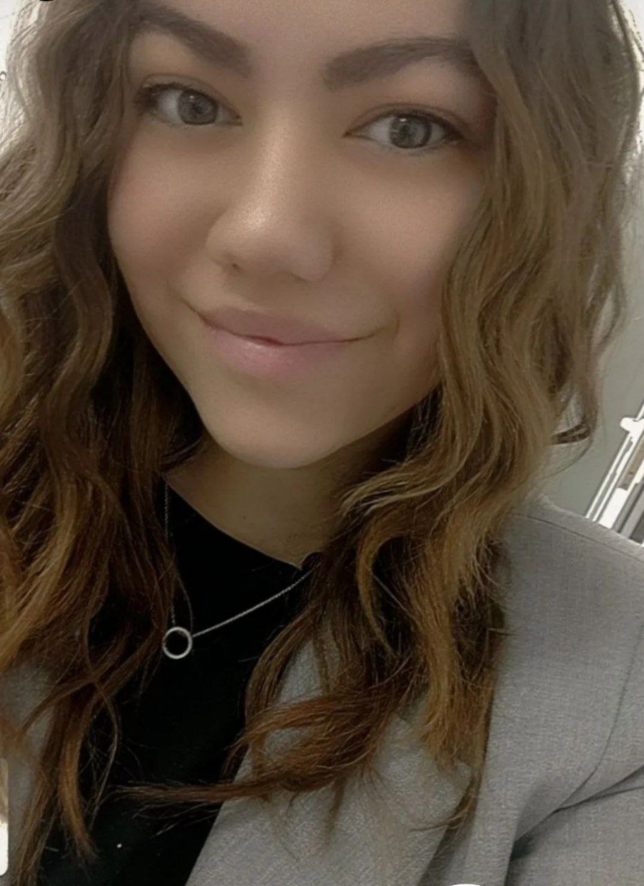

Portoliu Nadejda Cer

Studii
2006-2016: Liceu Teodretic `v.Vasilache
2016-2018: SHATOR SCHOOL -Scoala de croitorie si design vesrimentar
2022-2023: Curs de UI/UX Design
Abilitati Personale
Time Management
Abilități de lucru în echipă
Gândire critică
Atenta la detalii
Comunicabila
Interes pentru dezvoltare continua